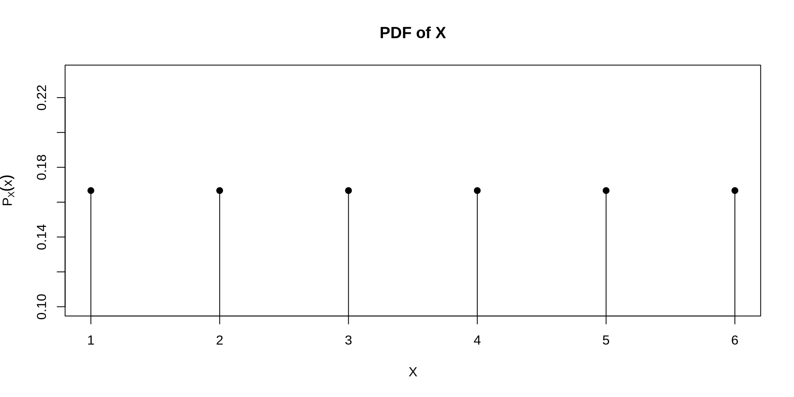
Definition 10.1
A random variable \(X\) corresponds to a random experiment. The value of the variable is not known until the experiment is performed. It is a function from the sample space \(S\) to a subset of the real numbers, \(\mathbb{R}\).
The probability that a random variable \(X\) equals a value \(x\) is denoted by:
\[ P(X = x) \]
A random variable is a function that assigns a numerical value to each outcome in the sample space of a random experiment.
| Random Experiment | Random Variable |
|---|---|
| Flipping a coin three times | The number of heads |
| Rolling two six-sided dice | The sum of the dice |
| Measuring time until a light bulb fails | The time to failure |
Definition 10.2
A discrete random variable is one in which the possible outcomes are countable and is usually a subset of \(\mathbb{Z}\).
Definition 10.3
A continuous random variable is one in which there are uncountably infinite outcomes and is usually a subset of \(\mathbb{R}\).
| Random Experiment | Random Variable | Type |
|---|---|---|
| Flipping a coin three times | The number of heads | Discrete |
| Rolling two six-sided dice | The sum of the dice | Discrete |
| Measuring time until a light bulb fails | The time to failure | Continuous |
Definition 10.4
The probability mass function (PMF) for a discrete random variable \(X\), is defined as
\[P_X(x) = P(X = x) \text{ for } x \in \mathcal{X} \text{ and 0 elsewhere}\]
where \(\mathcal{X} \subseteq \mathbb{Z}\) is a set of possible values for \(X\) and is called the support of \(X\).
A PMF for a discrete random variable \(X\) with support \(\mathcal{X}\) must satisfy the following two conditions:
The probability \(P(a \leq X \leq b)\) can be computed as:
\[P(a \leq X \leq b) = \sum_{x=a}^b P_X(x)\]
Definition 10.5
The probability density function (PDF) is a function such that the probability of the random variable \(X\) belonging to the interval \((a, b)\) is computed as:
\[P(a \leq X \leq b) = \int_{a}^b f_X(x) \ dx\]
A PDF for a continuous random variable \(X\) with support \(\mathcal{X}\) must satisfy the following two conditions:
Definition 10.6
The cumulative distribution function (CDF) of a random variable \(X\) is defined as
\[F_X(x) = P(X \leq x).\]
For discrete \(X\), this is:
\[F_X(x) = \sum_{k \leq x} P_X(k)\]
For continuous \(X\), this is:
\[F_X(x) = \int_{-\infty}^x f_X(t) \ dt\]
The cumulative distribution function (CDF) possesses the following properties:
It is a non-decreasing function and is right continuous for all random variables
It is a continuous function for continuous random variables and a discontinuous function for discrete random variables
\(\lim_{x \rightarrow -\infty} F_X(x) = 0\)
\(\lim_{x \rightarrow \infty} F_X(x) = 1\)
Theorem 10.1
If \(P_X(x)\) is the PMF for a random variable \(X\), then the CDF for \(X\) is:
\[F_X(x) = \sum_{k \leq x} P_X(k)\]
Conversely, if \(F_X(x)\) is the CDF, then the PMF is:
\[P_X(x) = F_X(x) - F_X(x-1) = P(X \leq x) - P(X \leq x-1)\]
Theorem 10.2
If \(f_X(x)\) is the PDF for a random variable \(X\), then the CDF for \(X\) is:
\[F_X(x) = \int_{-\infty}^x f_X(t) \ dt\]
Conversely, if \(F_X(x)\) is the CDF, then the PDF is:
\[f_X(x) = \frac{d}{dx} F_X(x)\]
Example 10.1
You toss a fair six-sided die and record the value. What is the PMF for this random variable?
\[ P_X(x) = \begin{cases} \frac{1}{6} &\text{for } x \in \{1, 2, 3, 4, 5, 6\} \\ 0 &\text{otherwise} \end{cases} \]

Example 10.2
What is the CDF for a random variable with the following PMF used to model probabilities for a dice roll for a six sided die?
\[ P_X(x) = \begin{cases} \frac{1}{6} &\text{for } x \in \{1, 2, 3, 4, 5, 6\} \\ 0 &\text{otherwise} \end{cases} \]
The CDF is computed as \(P(X \leq x) = \sum_{k=1}^{\lfloor x \rfloor} \frac{1}{6}\) for each \(x\). This gives:
\[ F_X(x) = \begin{cases} 0 &\text{ for } x < 1 \\ \frac{\lfloor x \rfloor}{6} &\text{ for } 1 \leq x \leq 6 \\ 1 &\text{ for } x > 6 \end{cases} \]
\[ F_X(x) = \begin{cases} 0 &\text{ for } x < 1 \\ \frac{\lfloor x \rfloor}{6} &\text{ for } 1 \leq x \leq 6 \\ 1 &\text{ for } x > 6 \end{cases} \]
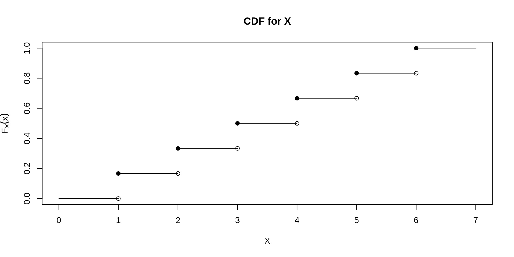
Example 10.3
You flip \(n\) fair coins and count the number of heads. What is the PMF for this random variable?
YOUR ANSWER HERE
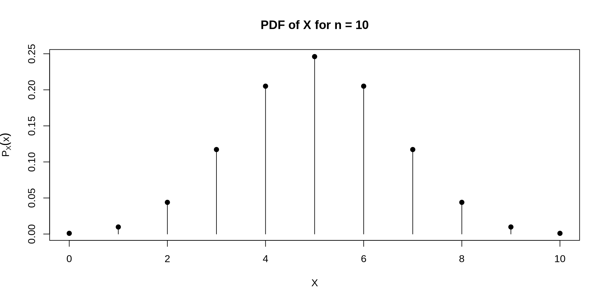
Example 10.4
What is the CDF for a random variable with the following PMF used to model probabilities the number of heads in \(n\) coin flips?
\[ P_X(x) = \begin{cases} \frac{\binom{n}{x}}{2^n} &\text{for } x \in \{0, 1, 2, \dots, n\} \\ 0 &\text{otherwise} \end{cases} \]
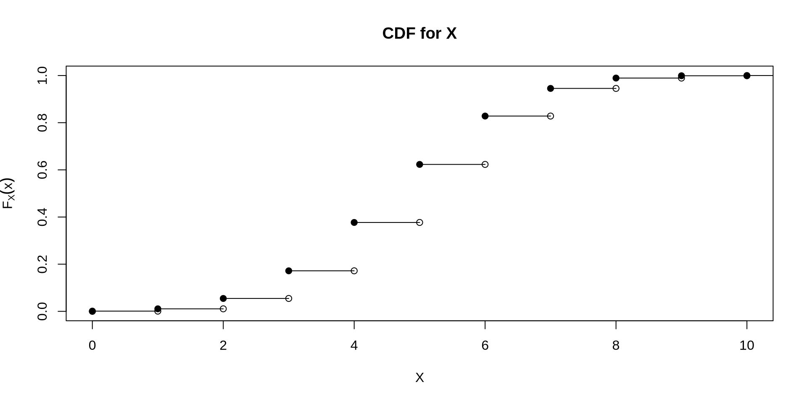
Example 10.5
You are interested in modeling the number of bedrooms in a house. For simplicity, the minimum and maximum number of bedrooms are 1 and 4 respectively. What is the CDF assuming we use the following PMF?
\[ P_X(x) = \begin{cases} 0.1 &\text{ if } x = 1 \\ 0.2 &\text{ if } x = 2 \\ 0.4 &\text{ if } x = 3 \\ 0.3 &\text{ if } x = 4 \\ 0 &\text{ otherwise} \end{cases} \]
The CDF would then be:
\[ F_X(x) = \begin{cases} 0 &\text{ if } x < 1 \\ 0.1 &\text{ if } 1 \leq x < 2 \\ 0.3 &\text{ if } 2 \leq x < 3 \\ 0.7 &\text{ if } 3 \leq x < 4 \\ 1 &\text{ if } x \geq 4 \end{cases} \]
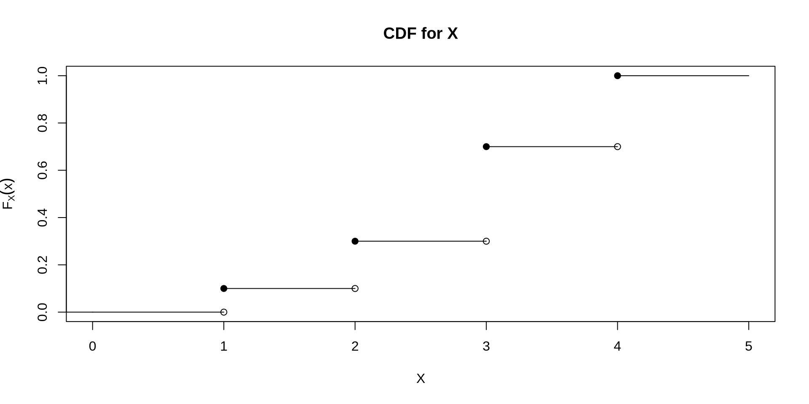
Example 10.6
You measure the amount of time it takes for a light bulb to fail where failure times decay exponentially. What might the PDF for this random variable look like?
One possible answer:
\[ f_X(x) = \begin{cases} e^{-x} &\text{for } x \in (0, \infty) \\ 0 &\text{otherwise} \end{cases} \]
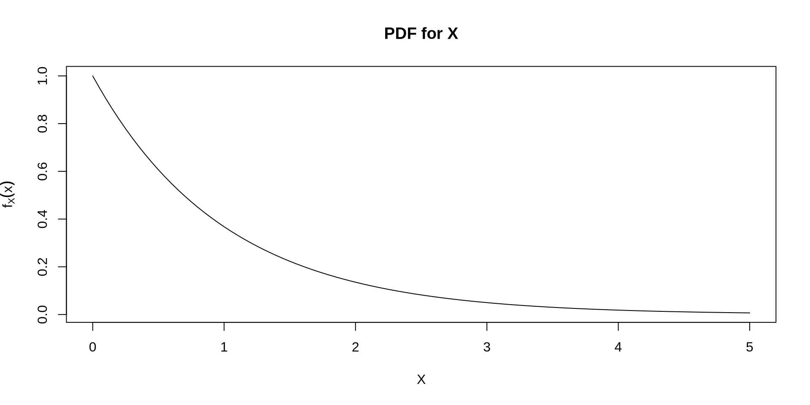
Example 10.7
What is the CDF for a random variable with the following PDF used to model light bulb failure times?
\[ f_X(x) = \begin{cases} e^{-x} &\text{for } x \in (0, \infty) \\ 0 &\text{otherwise} \end{cases} \]
The CDF is computed as \(P(X \leq x) = \int_{0}^x e^{-t} \ dt\). This gives:
YOUR ANSWER HERE
\[ F_X(x) = \begin{cases} 0 &\text{ for } x \leq 0 \\ 1-e^{-x} &\text{ for } x > 0 \end{cases} \]
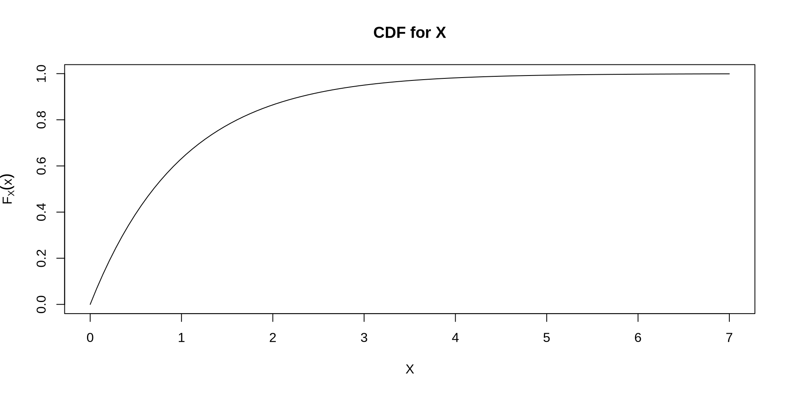
Example 10.8
You want to model the probability that a rocket launch succeeds. What might the PDF for this random variable look like?
One possible answer:
\[ f_X(x) = \begin{cases} 12 x^2 (1-x) &\text{for } x \in (0, 1) \\ 0 &\text{0 otherwise} \end{cases} \]
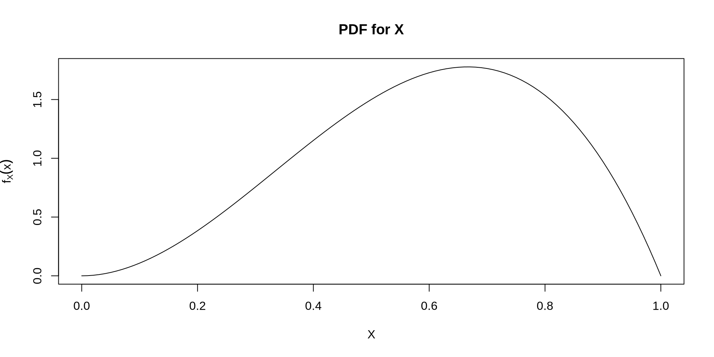
Example 10.9
What is the CDF for a random variable with the following PDF used to model the probability of success for rocket launches?
\[ f_X(x) = \begin{cases} 12 x^2 (1-x) &\text{for } x \in (0, 1) \\ 0 &\text{0 otherwise} \end{cases} \]
The CDF is computed as \(P(X \leq x) = \int_{0}^x 12 t^2 (1-t) \ dt\). This gives:
YOUR ANSWER HERE
\[ F_X(x) = \begin{cases} 0 &\text{ for } x \leq 0 \\ 4x^3 - 3x^4 &\text{ for } 0 < x < 1\\ 1 &\text{ for } x \geq 1 \end{cases} \]
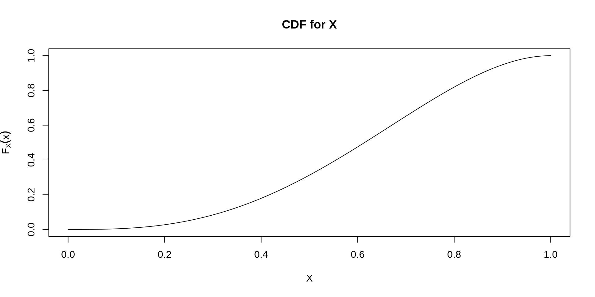
Example 10.10
You want to model the daily return for a particular stock. What might the PDF for this random variable look like?
One possible answer:
\[f_X(x) = \frac{1}{\sqrt{2 \pi}} \exp \left\{-\frac{(x-2)^2}{2}\right\}\text{ for } x \in (-\infty, \infty)\]
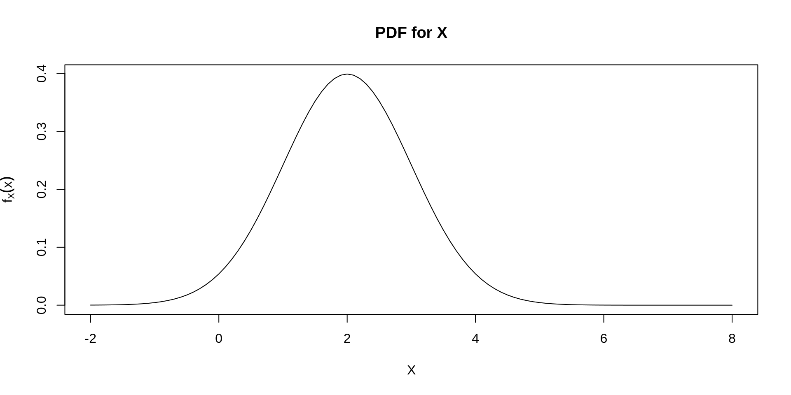
Example 10.11
What is the CDF for a random variable with the following PDF used to model stock market returns?
\[f_X(x) = \frac{1}{\sqrt{2 \pi}} \exp \left\{-\frac{(x-2)^2}{2}\right\}\text{ for } x \in (-\infty, \infty)\]
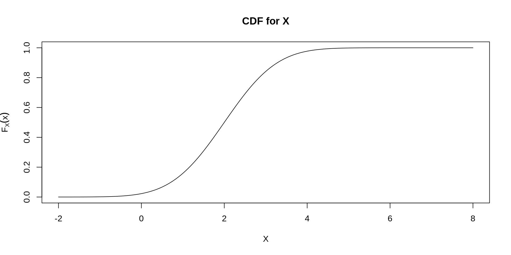
Theorem 10.3
If \(X\) is a discrete random variable with CDF \(F_X(x)\), then the following are all true:
Theorem 10.4
If \(X\) is a continuous random variable with CDF \(F_X(x)\), then the following are all true:
Example 10.12
Let \(X\) be a random variable corresponding to the value of a die for a single roll of the die, with CDF:
\[F_X(x) = \begin{cases} 0 &\text{ for } x < 1 \\ \frac{\lfloor x \rfloor}{6} &\text{ for } 1 \leq x \leq 6 \\ 1 &\text{ for } x > 6 \end{cases} \]
What is \(P(2 \leq X < 5)\)?
We want to find the probability that \(X\) is either 2, 3, or 4. This is computed as follows:
\[F_X(4) - F_X(1) = \frac{4}{6} - \frac{1}{6} = \frac{1}{2}\]
Example 10.13
Let \(X\) be a random variable corresponding to the number of heads in 10 flips, with CDF:
\[ F_X(x) = \begin{cases} 0 &\text{ for } x < 0 \\ \sum_{k=0}^{\lfloor x \rfloor} \frac{\binom{n}{k}}{2^n} &\text{ for } 0 \leq x \leq n \\ 1 &\text{ for } x > n \end{cases} \]
What is \(P(3 < X < 8)\)?
Example 10.14
Let \(X\) be a random variable corresponding to the number of bedrooms in a house, with CDF:
\[ F_X(x) = \begin{cases} 0 &\text{ if } x < 1 \\ 0.1 &\text{ if } 1 \leq x < 2 \\ 0.3 &\text{ if } 2 \leq x < 3 \\ 0.7 &\text{ if } 3 \leq x < 4 \\ 1 &\text{ if } x \geq 4 \end{cases} \]
What is \(P(X > 2)\)?
We know that \(P(X > 2) = 1 - P(X \leq 2) = 1 - F_X(2)\). Therefore, the answer is:
\[1-F_X(2) = 1 - 0.3 = 0.7\].
Example 10.15
Let \(X\) be a random variable corresponding to the time it takes for a light bulb to fail, with CDF:
\[ F_X(x) = \begin{cases} 0 &\text{ for } x \leq 0 \\ 1-e^{-x} &\text{ for } x > 0 \end{cases} \]
What is \(P(1 < X \leq 3)\)
Example 10.16
Let \(X\) be a random variable used to model the probability of a successful rocket launch, with CDF:
\[ F_X(x) = \begin{cases} 0 &\text{ for } x \leq 0 \\ 4x^3 - 3x^4 &\text{ for } 0 < x < 1 \\ 1 &\text{ for } x \geq 1 \end{cases} \]
What is \(P(X > 0.7)\)
Example 10.17
Let \(X\) be a random variable corresponding to stock market returns for a particular stock, with CDF:
\[ F_X(x) = \int_{-\infty}^x \frac{1}{\sqrt{2 \pi}} \exp \left\{-\frac{(t-2)^2}{2}\right\} \ dt \text{ for } x \in (-\infty, \infty) \].
What is \(P(2 < X < 3)\)